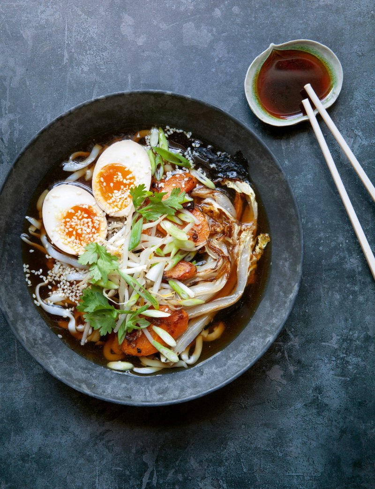

The Hairy Ramen
Did you hear what the ramen said to the hot water?
"Lets get steamy together". A recipe for making a good bowl of ramen.
Info
Ingredients
Broth
- 1 x 10g piece kombu, soaked for half an hour in cold water
- 15g dried shiitake mushrooms
- 4 garlic cloves, thinly sliced
- 25g fresh root giner, thinly sliced
- 1 tbsp caster sugar
- 50ml soy sauce
- 3 tbsp mirin or sake
- 1 tbsp miso paste
Soup
- 1 tbsp vegetable oil
- 1 Chinese lettuce/cabbage, cut into slim wedges
- 1 onion, coarsely sliced from top to bottom
- 1 large carrot, cut into 1/2cm slices on the diagonal
- 1 tsp miso paste
- 6 spring onions, white cut on the diagonal
- green very finely sliced
To Serve
- 4 blocks of noodles
- a few drops of sesame oil
- 4 sheets of nori sushi seaweed, roughly torn
- 4 tomago eggs, halved
- sesame seeds
To Garnish
- few sprigs of coriander
- 4 handfuls of beansprouts
- chilli oil
- soy sauce
Method
- Put all broth ingredients into a saucepan and add 1.5 litres of water.
Bring to the boil and then let it simmer for 30 mintues until everything is soft and the stock
has reduced by about a third. Remove from heat and let it stand.
-
In a seperate pan, heat the oil. Add cabbage and fry over high heat until lightly browned and on the cut sides.
Remove from the pan and set aside. Add onion and carrot and cook until onions and lightly browned. Stir in miso paste and
coat vegetables and cook for a couple mintues. Add cabbage to the pan.
-
Strain the broth and pour it over the vegetables. Taste for seasoning and add more soy, mirin or sugar to taste.
Add the white parts of the spring onions and simmer until the cabbage is tender
-
Cook the noodles according to the packet instructions. Run them under cold water and drain thoroughly.
Toss them in sesame oil. Divide the noodles and nori sheets between 4 large bowls and ladle over the broth and vegetables.
Sprinkle sesame seeds over the eggs, and garnish with spring onion greens, coriander and beansprouts. Serve with chilli oil and soy sauce.
- Serve at once
Back to home